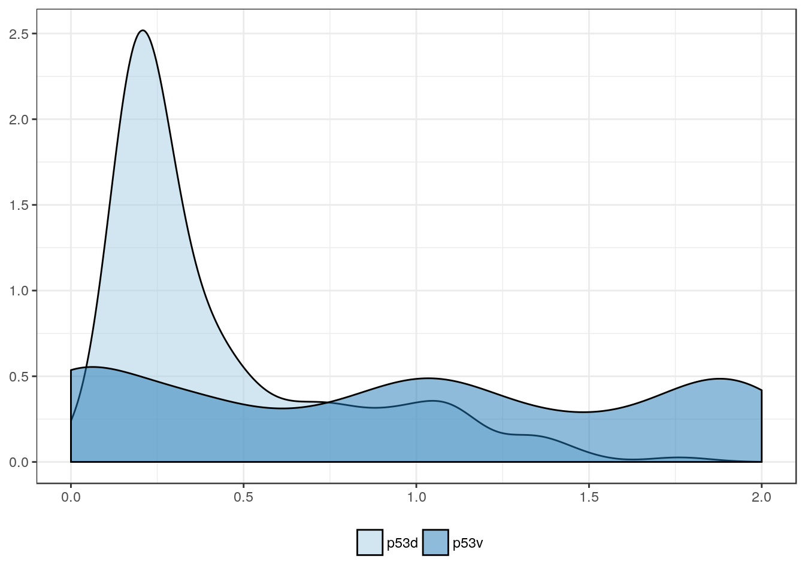
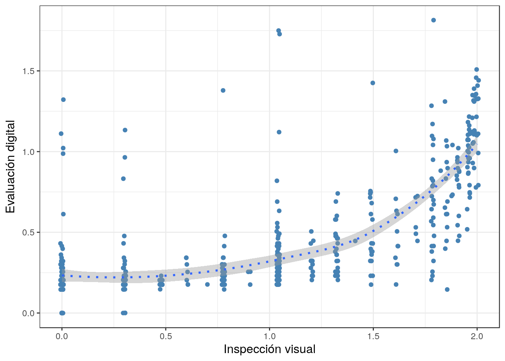
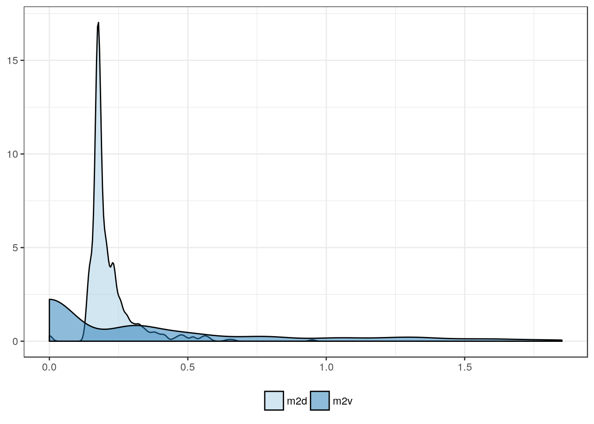

Fecha de última actualización: 2017-08-23
# Librerías
library(simpleR)
library(tidyr)
# Opciones globales
opts_chunk$set(message = FALSE, warning = FALSE)
# Datos y guiones
load("../Data/323.Rdata")
# Diagrama de dispersión
g2_cor <- function(x, y) {
DF <- data.frame(x, y)
ggplot(DF, aes(x, y)) +
geom_jitter(color = "steelblue") +
geom_smooth(linetype = 3) +
labs(x = "Inspección visual", y = "Evaluación digital") +
theme_bw()
}
Comparación de expresión
p53
df <- DF %>%
select(p53v:p53d) %>%
gather(marker, value, p53v:p53d)
x <- log10(df$value + 1)
y <- factor(df$marker)
g2_density(x, y)

g2_boxplot(x, y)

tbl_nice(df$value, y)
Summary table
| Mean |
3.4 |
24.3 |
| Standard deviation |
6.5 |
32.6 |
| Median |
0.8 |
10.0 |
| Interquartile range |
2.4 |
39.0 |
| Minimum |
0.0 |
0.0 |
| Maximum |
64.2 |
99.0 |
tbl_test(x, y)
Mann-Whitney U test for the sum of ranks
| U-statistic |
82468 |
| P statistic |
2.6e-24 |
x <- log10(DF$p53v + 1)
y <- log10(DF$p53d + 1)
g2_cor(x, y)

Ki67
df <- DF %>%
select(k67v:k67d) %>%
gather(marker, value)
x <- log10(df$value + 1)
y <- factor(df$marker)
g2_density(x, y)
g2_boxplot(x, y)
tbl_nice(df$value, y)
Summary table
| Mean |
2.1 |
29.3 |
| Standard deviation |
2.3 |
29.2 |
| Median |
1.4 |
15.0 |
| Interquartile range |
1.4 |
43.0 |
| Minimum |
0.0 |
0.0 |
| Maximum |
33.0 |
99.0 |
tbl_test(x, y)
Mann-Whitney U test for the sum of ranks
| U-statistic |
33618 |
| P statistic |
2.3e-91 |
x <- log10(DF$k67v + 1)
y <- log10(DF$k67d + 1)
g2_cor(x, y)
Cyclin-D1
df <- DF %>%
select(cd1v:cd1d) %>%
gather(marker, value)
x <- log10(df$value + 1)
y <- factor(df$marker)
g2_density(x, y)
g2_boxplot(x, y)
tbl_nice(df$value, y)
Summary table
| Mean |
7.9 |
25.1 |
| Standard deviation |
14.0 |
28.5 |
| Median |
2.7 |
10.0 |
| Interquartile range |
8.6 |
49.0 |
| Minimum |
0.0 |
0.0 |
| Maximum |
94.7 |
99.0 |
tbl_test(x, y)
Mann-Whitney U test for the sum of ranks
| U-statistic |
87912 |
| P statistic |
9.5e-20 |
x <- log10(DF$cd1v + 1)
y <- log10(DF$cd1d + 1)
g2_cor(x, y)
MDM2
df <- DF %>%
select(m2v:m2d) %>%
gather(marker, value)
x <- log10(df$value + 1)
y <- factor(df$marker)
g2_density(x, y)

g2_boxplot(x, y)
tbl_nice(df$value, y)
Summary table
| Mean |
0.7 |
4.4 |
| Standard deviation |
0.5 |
10.9 |
| Median |
0.5 |
0.0 |
| Interquartile range |
0.2 |
2.0 |
| Minimum |
0.0 |
0.0 |
| Maximum |
7.9 |
70.0 |
tbl_test(x, y)
Mann-Whitney U test for the sum of ranks
| U-statistic |
138772 |
| P statistic |
4e-02 |
x <- log10(DF$m2v + 1)
y <- log10(DF$m2d + 1)
g2_cor(x, y)